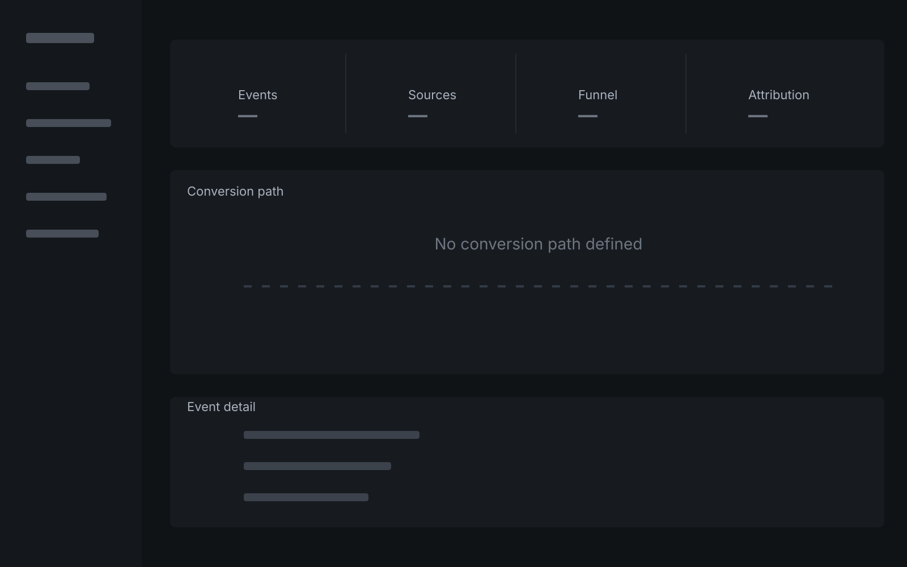
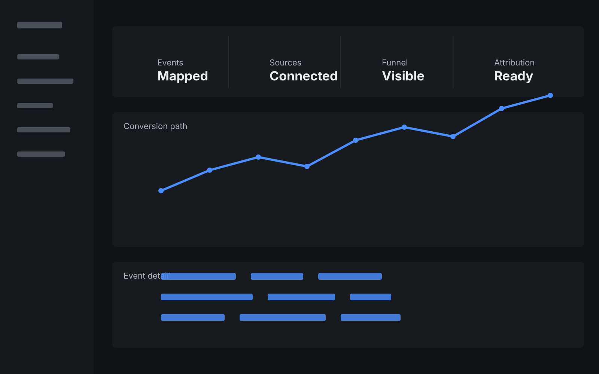

You generate traffic, but conversion is inconsistent.
OPTIVUE GROWTH OS
CLICKS
TO CLIENTS.
I connect the pages people land on, the CRM your team works in, the follow-up that happens next, and the reporting that shows what becomes a customer.
Built in your stack. Owned by your business.
Who this is for
Built for businesses with growth pieces that are not working together.
You have a CRM, but follow-up still depends on manual work.
You run ads, but cannot clearly see what becomes a customer.
Your website, CRM, campaigns, and reporting operate separately.
How the system works
The Optivue Growth System.
Five connected stages designed to turn fragmented marketing activity into one measurable acquisition system.
Five connected stages
Bring the right people into the system.
Build acquisition around clear intent and measurable business outcomes rather than disconnected traffic volume.
Working together
The work gets stronger when the handoffs are connected.
Acquisition, conversion, follow-up, measurement, and optimization should reinforce one another instead of living in separate tools and reports.
Selected client work
What changed for clients.
Three client projects showing what I changed and how the work fit together.
Express Medical Care / Revive
I connected landing pages, CRM routing, follow-up, booking, and local visibility so leads had a clearer path from first click to consultation.
Landing PagesCRMSMSSEO / GBPTracking
The work focused on making lead capture, qualification, follow-up, pipeline visibility, and local acquisition easier to manage together.
CBP / Ideal Spine
I combined Kajabi, custom front-end work, and content access into a clearer member-facing experience within the platform constraints.
KajabiHTML/CSS/JSUXContent Systems
The result was a clearer portal experience with supporting front-end and content workflows built around the existing platform.
CJB / LearnX
I connected content planning, prospecting, scorecards, and reporting so marketing activity was easier to see and coordinate.
ContentDashboardsLead GenAutomation
The work made day-to-day marketing activity, reporting, and follow-up easier to coordinate.
Project detail
Express Medical Care / Revive
Connect paid and organic acquisition to landing experiences, lead capture, CRM routing, automated follow-up, consultation booking, and reporting.
Selected work
Work Lab.
A closer look at the pages, routing, tracking, and follow-up work behind the client projects.
Lead routing and follow-up
Connect form submissions, qualification logic, CRM stages, SMS/email follow-up, and booking progression.
CRMLead RoutingSMSEmail
Conversion Landing Experience
Build focused landing experiences around one offer, one intent, clear qualification, and measurable actions.
Landing PagesCROUXTracking
GA4 / GTM Funnel Measurement
Define the events that matter, connect them to the funnel, and turn reporting into decisions instead of disconnected numbers.
GA4GTMDashboardsAttribution
Search & Local Visibility Workflow
Coordinate service pages, search intent, Google Business Profile activity, content, and technical SEO priorities.
SEOGBPSearchContent
Measurement
Reporting, before and after tracking.
Same dashboard idea, different evidence. Before tracking, the important actions are disconnected. After tracking, events, sources, and funnel steps form one measurable path.


Tracking changes what the report can prove.
Without event mapping, reporting stops at traffic. Once the important actions are named and connected, the report follows the path from source to conversion and shows where handoffs break.
- BeforeTraffic exists, but the conversion path is incomplete.
- AfterEvents, sources, funnel steps, and attribution are connected.
Pricing
Choose how far you want to build.
Choose the level of support that matches what you need to build now.
3-MONTH LAUNCH
Growth Starter
Build the foundation for a connected client acquisition system.
$2,500/ month
3-month minimum
BUILT IN YOUR STACKSystems and accounts remain under your ownership.
- Growth and funnel audit
- 90-day strategic roadmap
- High-converting landing experience
- SEO + Google Business Profile foundation
- Google + Meta campaign launch
- CRM integration
- Conversion tracking
- Lead routing foundation
- Monthly performance review
MOST POPULAR
6-MONTH GROWTH PARTNERSHIP
Growth Accelerator
Turn acquisition, conversion, automation, and data into one growth system.
$4,500/ month
6-month minimum
YOUR INFRASTRUCTUREI work inside your existing stack or recommend what needs to change.
- Everything in Growth Starter
- Multi-channel paid acquisition
- SEO growth program
- 2 to 4 CRO experiments monthly
- Landing-page optimization
- CRM + pipeline setup
- Email + SMS automation
- Lead qualification and routing
- GA4 + GTM measurement
- Attribution and reporting
- Monthly growth strategy
FLEXIBLE GROWTH PARTNERSHIP
Growth Lab
Embedded growth execution for businesses with more complex systems and goals.
From $6,500/ month
Scope based
NO PLATFORM LOCK-INYour business keeps the infrastructure we build.
- Everything in Growth Accelerator
- Full-funnel optimization
- Advanced CRM setup
- Custom integrations
- Advanced workflow automation
- Multi-platform acquisition
- Analytics and executive reporting
- Ongoing CRO experimentation
- Growth intelligence and insights
- Priority implementation
- Dedicated growth strategy
Advertising spend, third-party software, media production, and specialist services are quoted separately when required.
Ownership
Why I build inside your stack.
Provider dependency
- Platform portability can be limited
- Infrastructure may remain tied to the provider
- Migration can become a separate project
- Data access may depend on provider configuration
Your infrastructure
- Your accounts and data
- Your CRM and integrations
- Your tracking infrastructure
- Your funnels and workflows
- Your business retains the system
Free Growth Audit
Find the bottleneck slowing your growth.
Five focused steps. No fake score. The result identifies the system area that deserves attention first.
Saved context
Save your Growth OS context.
Your diagnosis and estimate stay together for this browser session so you do not have to start over before you book.
Project Estimator
Estimate the scope of your growth system.
Select what the business needs. The recommendation updates as complexity increases.
How I work
Audit first. Strategy next. Then systems.
I'm Rahmel. I build and run the work myself — the site, the tracking, the CRM, and the follow-up. There’s no account manager in between, and no junior taking over after you’ve met me.
I’ve spent eight years working with medical and wellness practices and consulting businesses — and more broadly, service businesses where a booked appointment is the sale. Most of the day-to-day work is practical: connecting the pieces you already use, fixing the handoffs, and making it clear what changed and why.
Understand the BusinessFind the BottleneckBuild the StrategyConnect the SystemsLaunchMeasureImprove
Next step
Have a growth problem worth solving?
Let’s review your acquisition system, identify the biggest bottleneck, and map the next priority.